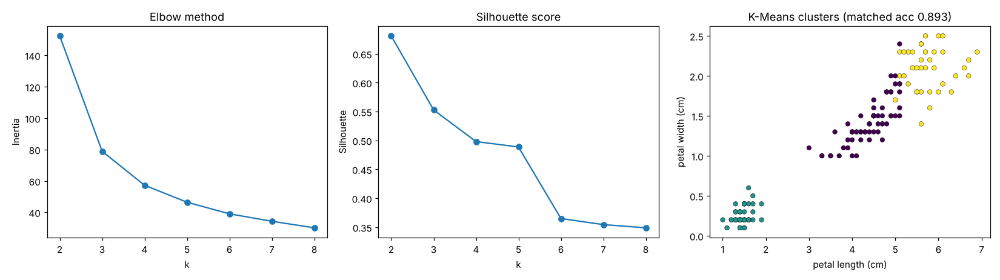

K-Means Clustering
Groups unlabelled points into k clusters by repeatedly moving k centres to the middle of their points.
Try it
Experiment: Set k lower than the true number of groups, then higher. Watch inertia: it always drops as k grows, even past the right answer.
The idea
There are no labels here. K-Means is told only “find k groups”. It drops k centres, assigns every point to its nearest centre, moves each centre to the average of its points, and repeats until nothing changes.
Step through the demo to watch the two phases alternate. Try a bad start: K-Means can settle into a poor solution, which is why real implementations restart several times (and use smart starting points, called k-means++).
How it works, step by step
- Choose k and place k starting centres (for example k random points).
- Assignment step: give each point to its nearest centre.
- Update step: move each centre to the mean of the points assigned to it.
- Repeat steps 2–3 until the assignments stop changing.
Strengths and weaknesses
Strengths
- Simple, fast, scales to large data
- Easy to explain the resulting groups by their centres
- A good first look at structure in unlabelled data
Weaknesses
- You must choose k in advance
- Assumes round, similar-sized clusters
- Sensitive to the starting centres and to outliers
- Needs feature scaling
Use it when: Customer segmentation, compressing colours in images, grouping similar documents or behaviour.
Avoid it when: Clusters are long, curved or very different in size and density.
In this repository
Dataset: Iris (150 flowers, labels used only for scoring)
Setosa is grouped perfectly; versicolor and virginica overlap in the measurements, so no unsupervised method separates them cleanly.

from sklearn.cluster import KMeans
km = KMeans(n_clusters=4, n_init=10).fit(X_scaled)
km.labels_ # cluster of each row
km.cluster_centers_ # one centre per clusterFull code: models/09_kmeans. Train it on your own data with
python models/09_kmeans/train.py --data your.csv --target column.
Check yourself
It needs no labels, but k is your choice.
That loop is the whole algorithm (Lloyd’s algorithm).
Use the elbow method or silhouette score instead.
Answer all three correctly to mark this model as learned.